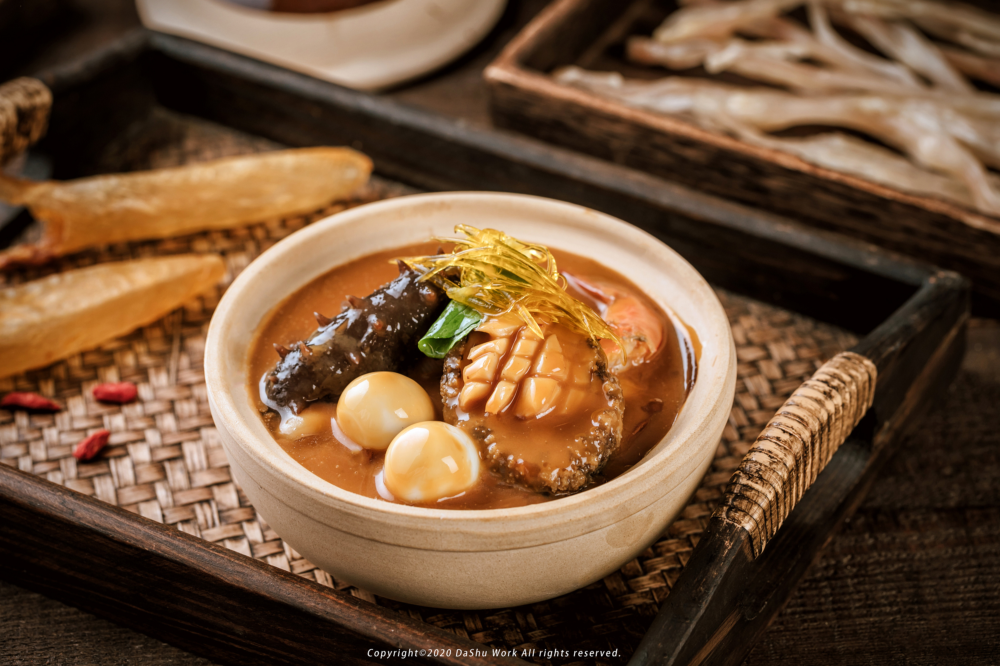
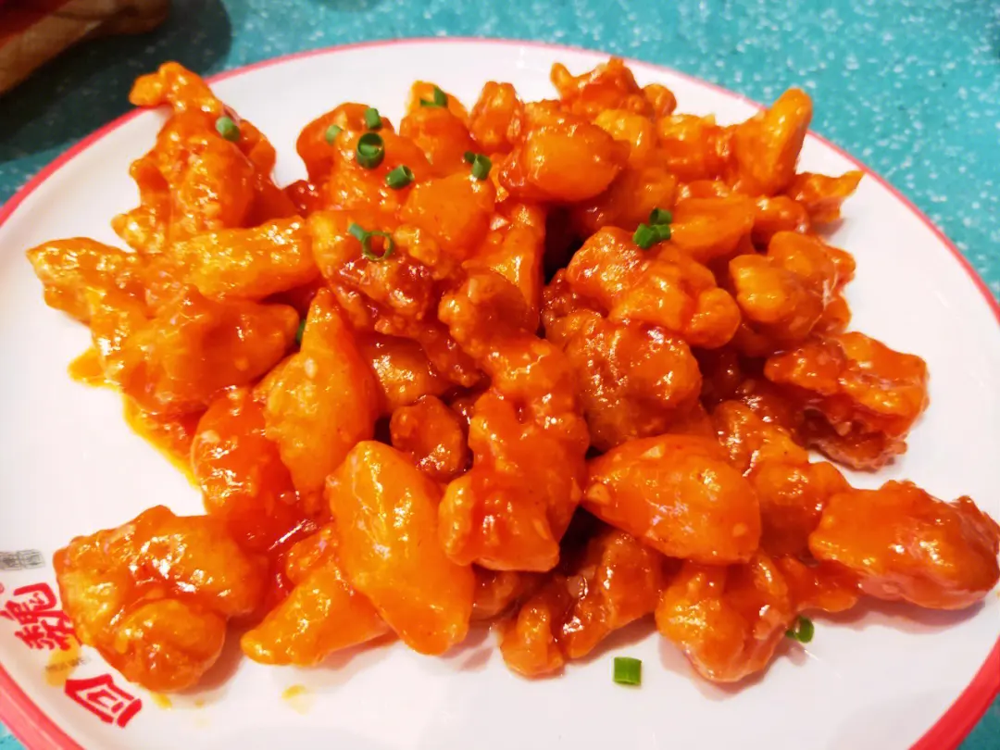
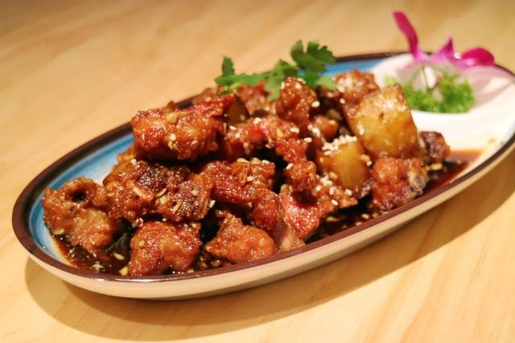
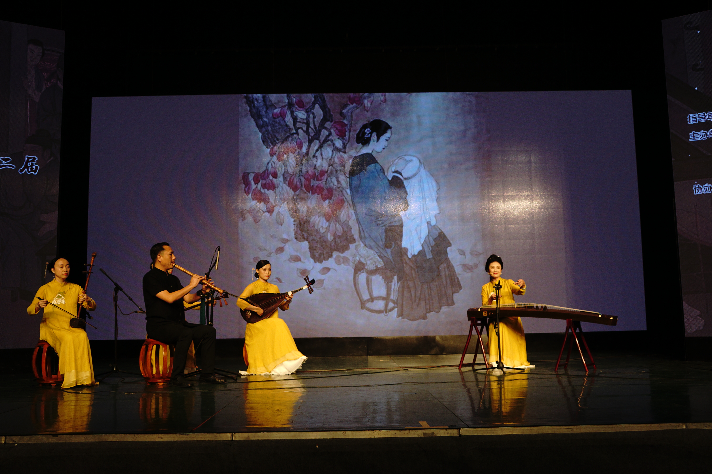

Steamed Abalone with Shark's Fin and Fish Maw in Broth

Lychee meat

Spare Ribs in Wine Sauce
Xiamen took the lead in issuing a series of rules and regulations related to the intangible cultural heritage of southern Fujian, carrying out census records, intensifying theoretical research, constantly improving representative projects and representative inheritors system, improving the protection and inheritance level of the intangible cultural heritage, intensifying the dissemination and popularization of the intangible cultural heritage, organizing a variety of intangible cultural heritage publicity and exhibition activities, and promoting active inheritance. The picture shows the performance of Nanyin, one of Xiamen's intangible cultural heritages.
Explore
Kungfu tea is a unique tea brewing technique in Chaoshan and Fujian regions. It is a new way of making tea. This way of making tea is extremely exquisite, which is not only a tea art, but also a custom. Xiamen is one of the origin of kung fu tea, with a strong tea culture atmosphere. The essence of Xiamen tea culture is tea ceremony, which has the beauty of the five realms.
ExploreThe custom originated in Xiamen, Fujian Province. Participants take turns throwing six dice to get mooncakes of different sizes. The rules of the game are simple and fair, full of competition and suspense, and full of life interest, which has always been favored by the general public. Legend has it that the game can predict a person's luck over the next year.
Explore


Fujian cuisine is one of the eight major cuisines in China, which is formed after the mixing of Han culture and Minyue culture in Central China. Originating in Fuzhou and based on Fuzhou cuisine, the Fujian people often travel to and from the sea, so the food customs have gradually formed a unique cuisine with open characteristics. Fujian cuisine is famous for cooking delicacies of mountains and sea, with three major features.